如何使用陌生工具
连机器都会泛化能力，我们没理由不会。学习的目的是为了学习，通过学习我们应该懂的不是所学的东西，而是知道学习到底是怎么一回事。有时，我不禁思考，学习真的有必要跟着教程一步步来吗？话说回来，教程到底是什么呢？我不明白，比如一个保存文件的操作，还需要教吗？接下来，我将以几个冷门的工具为例，来讲讲我是如何用会它们的。
软件
软件本身应该是一个很泛的概念，比如python的代码应该也称为软件，但在有些人的认知里，软件就是软件，代码就是代码，所以我们先从软件开始。当然我们不会选择傻瓜式的软件，而是操作复杂的工程式软件，因为这样才有学习的必要，如果对于就点几个按钮的软件都不会用的话，只能说别学了吧。
krita
krita是一款的绘图软件，不像PS之流有着烂大街的教程。但并不意味着它没有教程，官方文档及官方文档的中文翻译就是最好的教程，有的时候只有一份教程是件好事，至少不会为选择而犯难。
我很喜欢一句话，“软件能达到目的就足够了，是否流行并不重要。”学习一个软件前，要明白它能做到什么，官方描述是电子绘画和一点图像处理，也就是说krita的最后目标就是一张图片而已，与PS，SAI之类的如出一辙，那为什么我要选择krita呢？理由其实很单纯，做基本相同的事，却有着更小的内存和更快的运行速度，像PS有上G的内存，但用精简版的功能却基本差不多，简单来说就是有太多不需要的功能出现在了PS内，导致大量内存的浪费，比如PS有个时间轴可以用来做动画，但有必要吗，有些人可能指望着说不定哪天就需要呢！那我们来看看，对于作图，我们需要什么，同时在与PS的对比中，学习Krita的用法，对比学习最基础的方法，学习编程语言的时候也可以应用起来，举一反三是陌生学习的基础能力。
绘图
看图是绘图最基础的功能，在绘图之前，我们应当可以全方位的考察图片，而PS并不能选择看图，但像下面这样
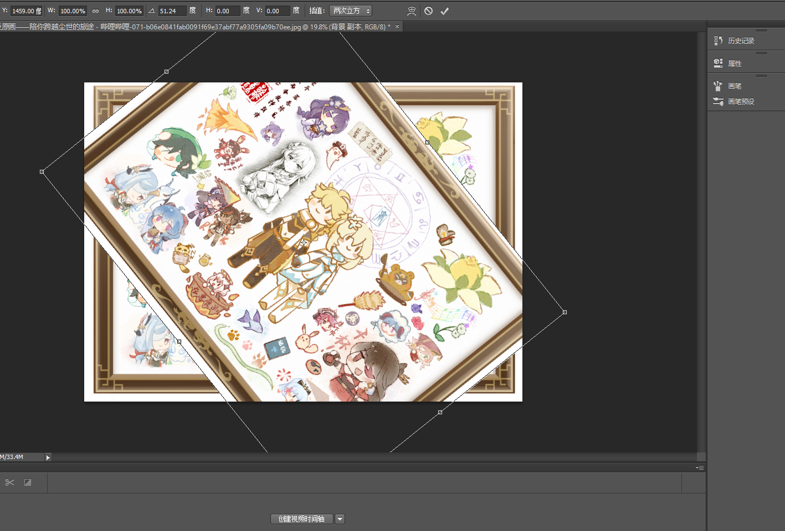并不是旋转看图，而是对图片进行旋转操作，真正的旋转看图是这样的
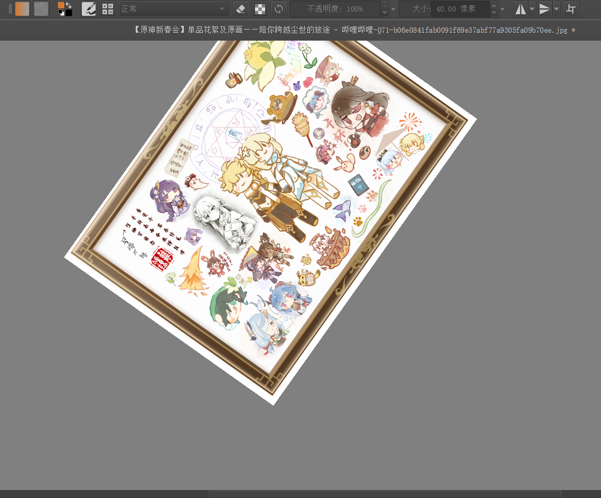不添加选择功能也是有一定理由的，当选择后产生斜边以后就需要处理锯齿的问题来防止对观感的影响。而且在PS进行看图的操作也不是很传统，用起来不舒服。在Krita里，按住鼠标中键移动，滚轮缩放，与blender一脉相承，但在PS里，alt+滚轮进行缩放，滚轮上下移动，ctrl+滚轮左右移动，这么神奇的方案不知是怎么想出来的，你说抓手工具？这不谁都有的东西嘛，正是要操作方便才会用快捷键嘛。
图层是一种辅助作画的工具，进行作画前，一定要确定你画在哪个图层上，不同图层互不干扰，将一副图拆分为多个部分，还能分配给不同的人来完成，最后组合在一起，进行修正即可。选区是在图层之上的进一步分离工具，目的是实现图层之上的不干扰操作
蒙版也是一个与选区类似的东西，总之此三者的基本目的都一样，分离操作，互不干扰。
历史记录基本所有软件都该有的东西，防止误操，不知是不是盗版，还是没有设置的原因，在PS里，ctrl+z似乎会将撤销也视为一步操作，导致在一步撤销里反复横跳，只能通过历史记录框来选择具体回到哪一步。文件相关，除去各自的工程文件，krita支持比PS更多的文件格式，在画布上，PS对透明通道的支持程度不如krita，这也是为什么PS在处理三通道图片时有一个图层始终锁定的原因，而krita里，画布显示通道与图片通道是隔离的。
画笔、取色是绘画最重要的两个部分，至于橡皮擦，在某种意义上它也是一种画笔，我们把对图片像素进行某种修改的工具都称为画笔，取色的目的是给画笔提供基础色，我们把调色板也视为取色的一部分。画笔的功能十分复杂，是绘画的主要部分，需要平时不断尝试，看看产生的效果，并应用于以后的绘制中，而一个个去说显然是比较蠢的行为，画笔的本质只需实现三个部分，基础色、像素大小、边缘处理，当然画笔的原生参数还是比较多的
但需要吗？不需要吧，拿几个仿真现实的预设画笔，就够用很久了。
图像处理
图像处理与绘画很像，只是前者相当于批量像素处理，后者是少量像素的连续处理。首先像裁剪、抠图、拼接图等不叫做图像处理，这大概是通常所说的p图，一般不需要krita和PS这种大型图像处理，当然它们也是可以完成的。所谓的图像处理应当以OpenCV为标准，与其相比，krita和PS的功能都是不足的，krita所谓的少量图像处理指的是什么呢？比如菜单栏的滤镜就是一个
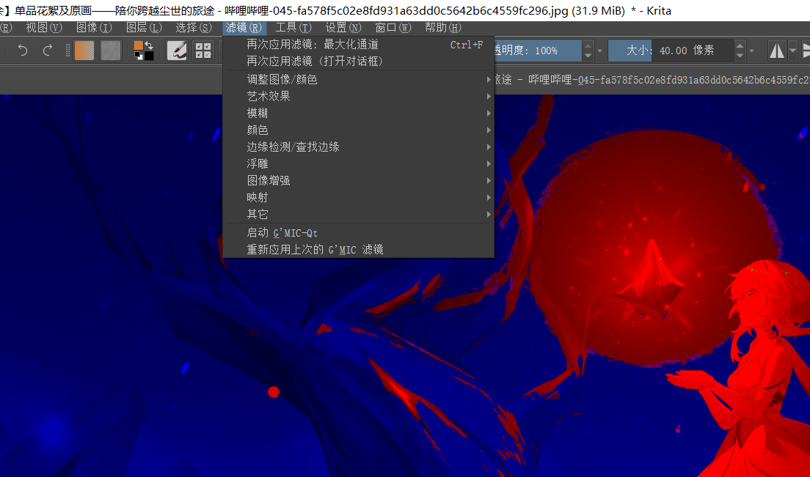其实PS好像也提供不出更多功能的样子，如果要实现更多功能的话，其实可以通过脚本(或插件)系统，对于大型的开发型软件基本都有类似的扩展，相当于软件为你提供一些API接口，你在此之上实现更多的功能。
至此，对Krita的基本框架，我们认识得差不多了，至于细枝末节，用不到也不用关心，在这个层面上，程序还能提供什么功能呢？基本没了。类比PS的办法，我们基本已经学会了Krita的用法，当然如何用好它那是另一回事了。
inkscape
inkscape是矢量图绘制工具，可以对标Adobe系列的illustrator，你可能会说对标工业标准不太合适吧，确实Adobe让自家的文件标准互通，不像我们开源软件使用的都是公共文件格式，特别在多人合作开发中，标准互通是很重要的，另一方面是Adobe的教程泛滥，便于学习，而我们的inkscape能参考的只有官网了，不过这也方便成为我们陌生学习的实例。
初识软件。刚进入软件界面，我们可以得到一个类似krita一般的作图界面
中间有一个黑框，看着十分碍眼，但其实它是没有恶意的，只是告诉你导出文件限制在这里面，因为矢量图的依赖关系可能来自画布外
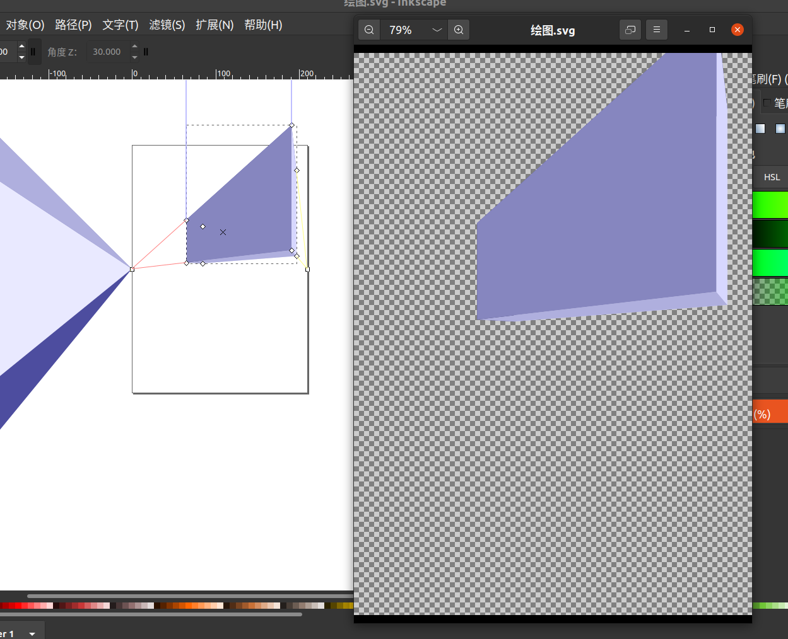从作用入手。inkscape是矢量图处理工具，那么了解什么是矢量图是必需的，一般人会认为是一种不会失真，有具体规则的图片，我们从更本质上探索的话，它实际上就是一段代码，以文本格式可以打开svg标准矢量图文件
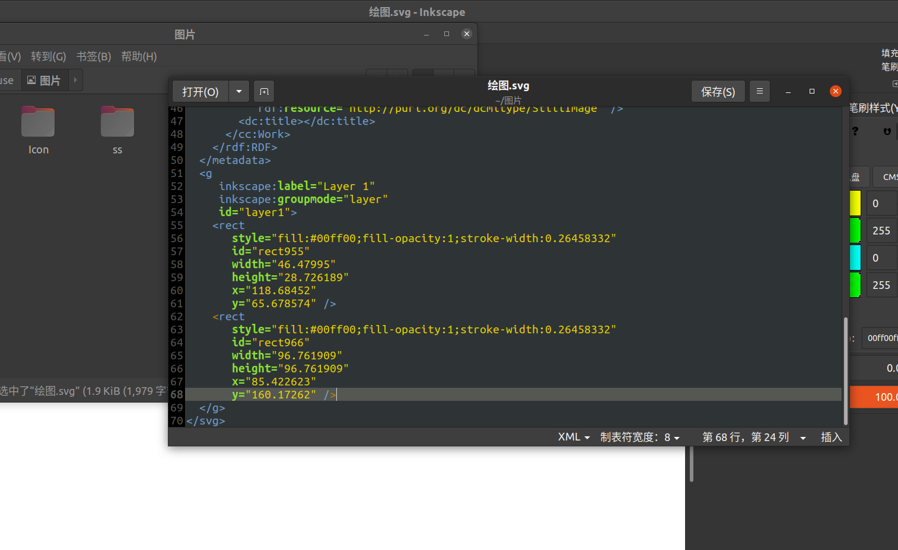使用超文本标记语言，可以很方便的移植到Web开发中去。inkscape相当于辅助我们写矢量语言的可视化工具，从这里我们就应该能理解使用时可能出现的限制，比如没有画笔工具，其基本不具有规律性，不过它确实提供了画线的功能，不过实现嘛
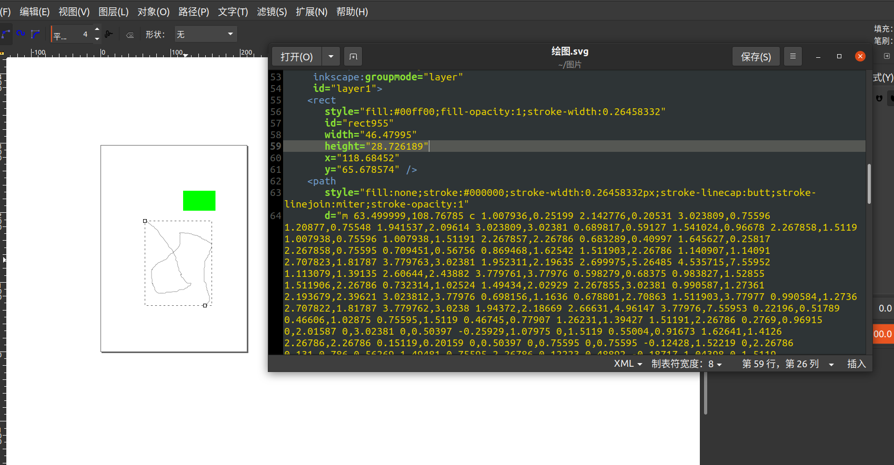就是记录大量的位置信息。绘画的基本单元是图层、选区和像素，矢量图继承图层思想的基础上，基本单位是对象，一个圆或一个线之类的。说好的陌生学习呢？首先，我们陌生学习的对象是工具，而不是矢量图，其次对于工具类的学习，我们要了解其所处理对象的基础知识，要学习一个视频处理软件，如果连视频本身有哪些操作空间都不知道，那又怎么去理解工具所提供的丰富功能呢？对于矢量图，我们还要知道一点，曲线不一定无规则的
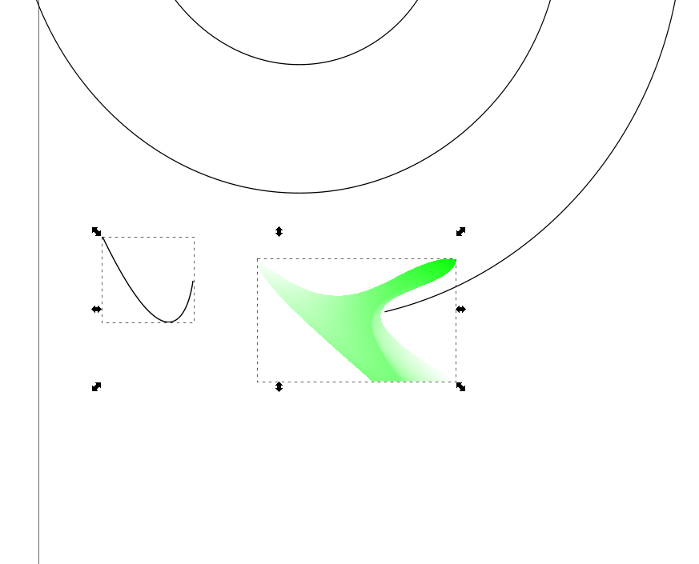贝塞尔曲线就是一个很好的例子。实际上，与其说我们在学习工具，不如说在学习矢量图。矢量图的创建不一定要依赖工具，我们甚至可以直接手写代码，我们使用工具的目的是更快地达成我们的目标，而不是为了完成目标那么简单。
熟练掌握。当我们对矢量图了解深刻以后，使用矢量图工具实际水到渠成的事情，各种规则图形工具，相同位置的颜色混合，对象的各种参数调整，等等都是轻而易举的事情。很久以前信息技术老师就说过，软件就是点点，你需要的是软件处理对象的知识。这让我想起了R语言，我们专门拿它来套统计模型，本身R语言的处理十分数学而且自然，用着用着就熟了，难点在哪？在于套模型的时候总会弹出你可能不知道的错误，而不知道的根源在哪？在于你并不理解这个模型，而不是因为你不会用R语言。不同于上一部分的比较学习，这一部分强调的是核心学习，即学习软件所处理的对象的知识。
为什么我这么喜欢用这些开源软件呢？别人用各种商业统计软件我用R，别人用adobe全家桶我用krita、inkscape、blender等，别人用知网我用scihub和arxiv，有的时候，我宁可给免费软件打赏，也不想给付费软件续费。其消费心理上来看，给免费软件打赏相当于先使用再付费，不好用的话就没有损失，但付费软件，嗯，还有试用机制呢！但不完整，先付费再使用，谁知道以后会怎么样，而且价格还是死的，不能根据使用舒适度来决定付多少。更何况，我不知在达成目的上，使用免费软件和付费软件的区别在哪里。
开发
软件就随便说说，关于开发相关，我们来重点说说。在开发中，陌生工具指的一般是第三方库，分为开源和闭源两种，闭源一般涉及到某种用于商业的代码，比如fbxsdk、cubismsdk等，这种第三方库，一般都有详细的帮助文档支持，甚至还可能有多种语言。我们主要讨论开源版的库，它们一般是处在某个git仓库的代码，有些甚至连官网也要靠gitpage服务，当然如果是一些知名的库，文档和教程都是很丰富的，比如之前用的opengl，库文件的使用本身很简单，稍微有库所对应语言的开发经验的基本都会，如果是C/C++，只要头文件加链接到库即可，库文件使用的难点在于对库的理解上。
opencv
我们先拿一个比较入门级的例子opencv，用于图像处理，但它并不是什么软件，而是用C/C++编写的开源库，同时提供了多种语言的接口，cv的本意是计算机视觉，我觉得直接视为图像处理也是没有问题的。
opencv的基础使用十分简单，imread得到图片在内存中的形式，然后使用自带的或自己写的函数进行一番处理，最后再imwrite输出图片，整个库的使用流程就结束了。所以经过我们一番总结，opencv学习的核心其实在于各种图形处理的理解，比如滤镜，模糊，色彩空间装换等，而这些往往都是基于数学而产生的，图片在内存中的形式实际是c(通道数)×w(宽度)×h(高度)的矩阵，非标准化的数据范围是0-255，比如模糊的基本方式就是有规律地选一些区块进行算术平均的结果，具体规律和区块大小实际就是opencv所提供接口的参数，这样我们从原理上理解了opencv的一个用法。平常的许多课程都喜欢讲原理，但很多人觉得明明只要知道怎么用就行了，底层原理又不需要我们来实现，但不懂原理的后果就是，用的不三不四的。这还可以用到之前所说的opengl上，你要学的是图形学而不是图形API，否则opengl为什么画个三角形需要这么多步骤是很难理解的事。
我听过这样一个论调，有的时候代码比原理好理解多了，有的时候，我学算法的时候确实如此，很多对算法做说明的书总是对一个简单的算法叽叽喳喳的一大堆，生怕你不理解，但步骤却写得模模糊糊，一点数学的严谨性也没有，算法本身应该输入输出和具体操作，一个十分明确的东西，还非得用不清不楚的伪代码和不加解释的符号，一个典型的例子就是我看的那本数值计算的书，有一个符号的说明，竟然放到了定理的证明里面去。对于算法，我确实相信这个，因为编程语言比那些书面语言更加严谨一些，但放到API使用上，我并不是很认同，在API的使用上，我们做的往往是调参，而使用的例子往往是某个具体参数，照着写，随便改改参数确实可以达到成功运行的地步，但你真的理解参数修改前后的区别吗？要理解参数终究还是得学原理。
libpng
libpng一个底层的png解码库，基本功能是读取png文件到内存中去，稍微写一下就像这样
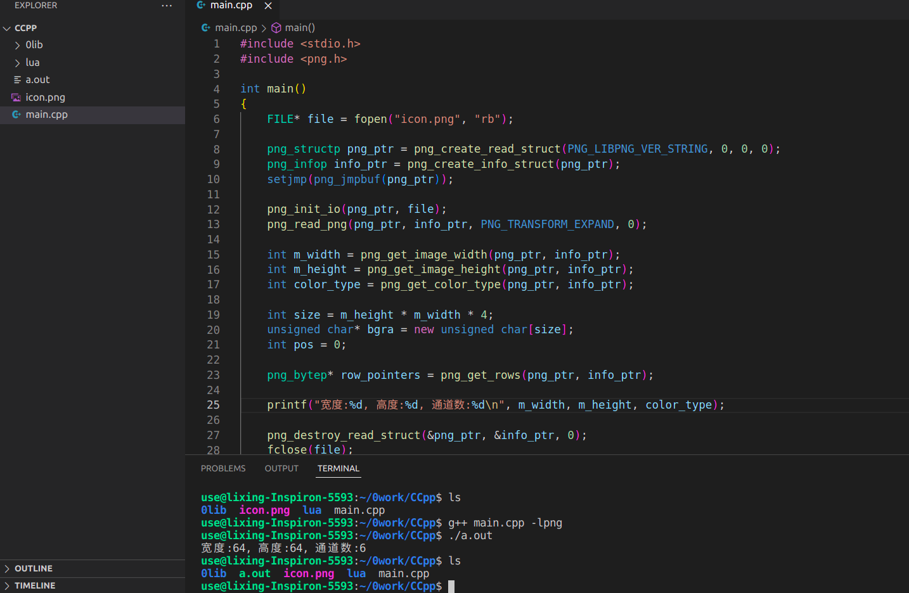成功读取到了图片的信息，其中row_pointers存储具体的像素信息，其功能相当于opencv的imread，但opencv可以支持更多的图片格式。对于一般的开发者，多多少少听过这个库，但基本都没有用过，因为根本没有必要，其功能往往都封装在能处理更多图像功能的库里，使用的也是这个库所提供的接口。比如当时做opengl使用的图像解码库是std_image.h，而且就一个头文件就可以解析多种图片格式，反之我们需要libpng、libjpeg等多个库来解析各种图片，但很多工具都喜欢使用libpng作为png解码库，比如cocos2d，理由其实是高效，在图片吞吐量的的游戏运行中，以尽可能少的时间将图片加载到内存中是刚需。
对了，我们不是要探索如何使用陌生的库吗？换个思考角度，这个库本身的内容不是很多，但作为开源库改造的空间很大，想要开放更多的接口也不是问题，单纯就是调一下库，存储在固定的结构体内，属于库引用的基操了。libpng需要学吗？需要理解png图片压缩的基本原理吗？解读png文件的编码是必需的吗？这可能与我们之前所说的情况有所不同了，不同的关键在于控制上，opencv的api用于图像处理，拥有众多可控制参数来达到不同的效果，但libpng用于读取特别的图片，图片格式有统一标准，长宽加通道即组成图片，有什么可控的东西吗？没有，这其实跟使用一些源码隐藏的库是类似的，有些文件格式编码是不可知的，我们顶多通过官方API库读取到特定的结构体或类上。这时我们的精力应该放到结构体或类上面去，但表征图片的内存结构十分单一，和opencv一模一样，就是一个3维度的矩阵罢了。总结一下，这种库用就完事了。
manim
manim是一个制作数学动画的python库，其安装和制作过程，在早期是十分繁琐的。为什么呢？因为底层依赖过多，比如视频编码靠ffmpeg，数学公式渲染靠latex，全都是高效C/C++库，manim在此基础上利用python的便捷性实现了数学动画上的封装。现在manim的社区版，可以直接用pip进行安装，在linux是比较方便的，因为很多库可以使用linux的包管理工具安装，比如ubuntu的apt。如果想用原始的3b1b的manim的话，可以用pip安装manimgl，在官方页也是这么说的
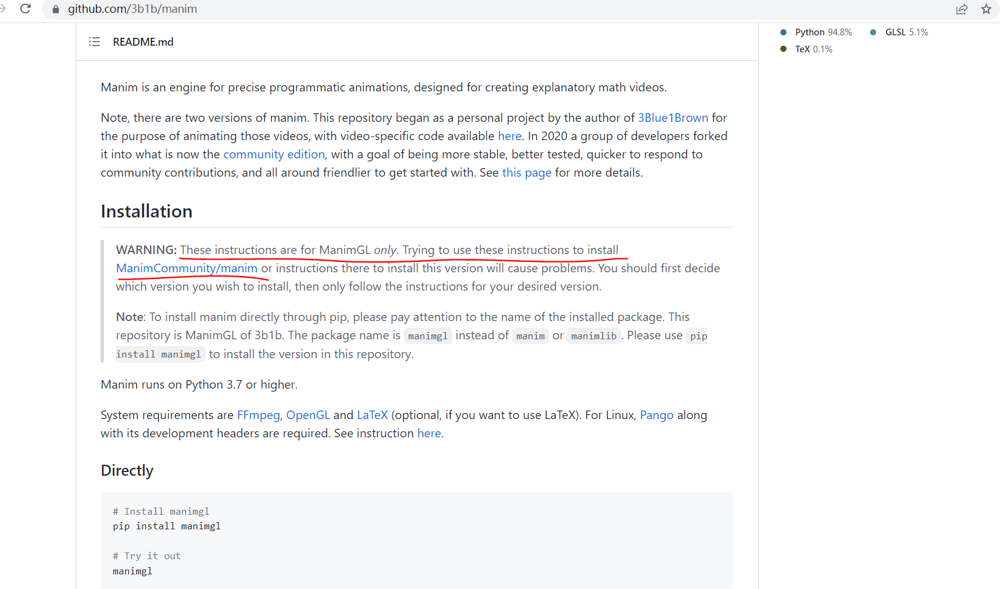简单说就是，要用manim，直接用社区版就够了，这里提供manimgl使用，manimgl是manim制作动画的交互环境，也可以直接渲染manim代码，算是一种扩展插件，并不是学习的重点。manim虽然以前很小众，但如今社区壮大也有了自己的文档，而3b1b也制作了自己的文档，还提供了中文翻译，两者使用的区别并不大
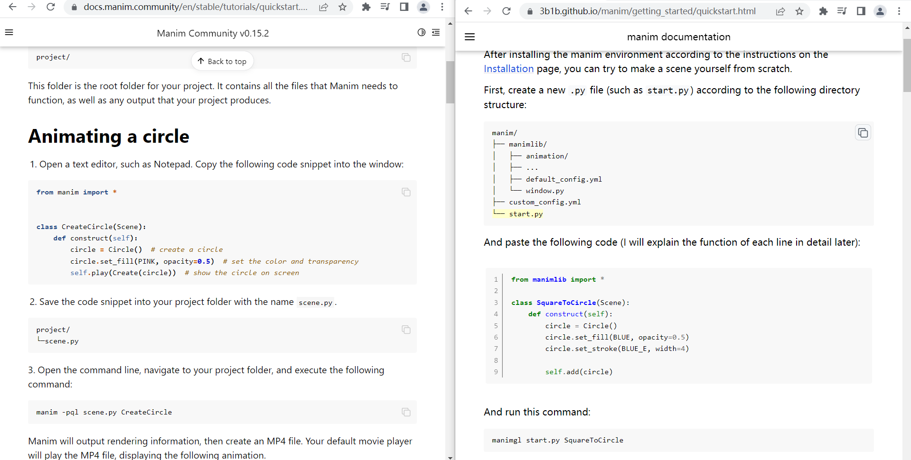只不过一个导入manimlib，另一个导入manim，而3b1b版本还具有更丰富的配置文件，具有manimgl提供交互效果，如果从制作数学动画的角度，使用3b1b版其实更好，社区版比较适合于开发。而且manim比较活跃的一个中文社团manim kindergarten使用的也是3b1b版，文档的中文翻译也是这个社团提供的。至于社区版，看官方的一些例子就可以知道
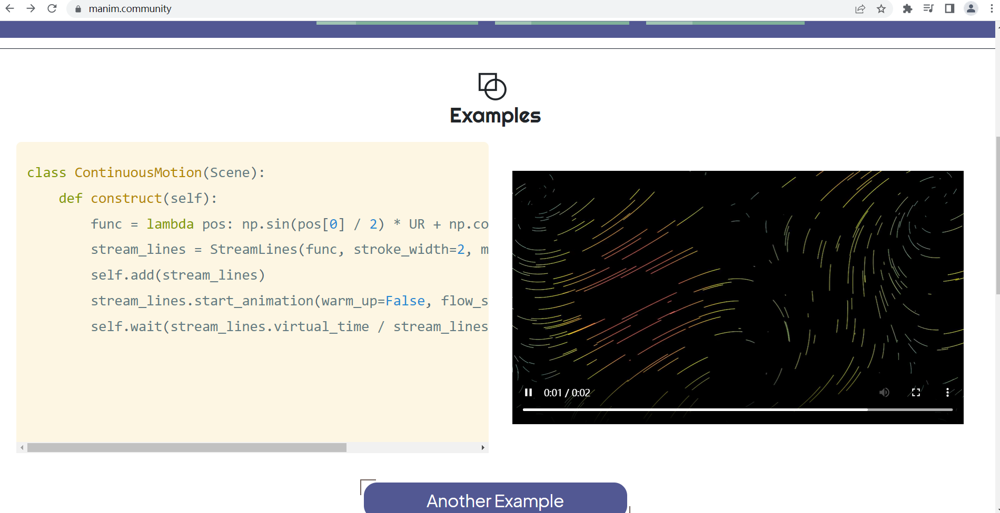它们想把它作为一个动画引擎库来用，而非数学专门型的库。差点忘了我们的主题了，我们的目的是用好manim，学会manim，但学会的意思是什么呢？把官方的例子复制一下，随便改一点东西，运行一下，成功了，耶，我学会manim的使用了。虽说可能有些草率，但事实可是这样的，manim实际属于前面所说的两种情况的结合体，对于一些简单的动画，比如像矢量图那样的动画，随便调一调软件库就足够了，但要使用manim制作复杂的动画，就需要去理解manim动画的一些原理了，可以通过读源码，也可以看mk社区里的相关解读。注意我们不是要去理解数学原理，我们的目的是做动画，而不是完成数学的内容，当然两者通常都是一体的，不过从工具利用的角度，我们要考察动画上的原理，不过很多动画的原理也依靠一些数学，比如补间动画，需要了解一些数学插值的原理。如今社会的开源精神是很普遍的，很多精美的manim动画都是开源的，通过对实例的考察和模仿，可以一定程度上加快我们的学习进程和理解能力，至于系统的学习，我一直都觉得没有必要，在实践中不断学习才是比较实在的东西，先拿到框架，看看我们需要完成什么，从文档中查到做法，进行模仿，如此反复就达到了我们的目的，在实践之中，不知不觉是可以学到很多的。
不想再说什么了，就此告别吧。